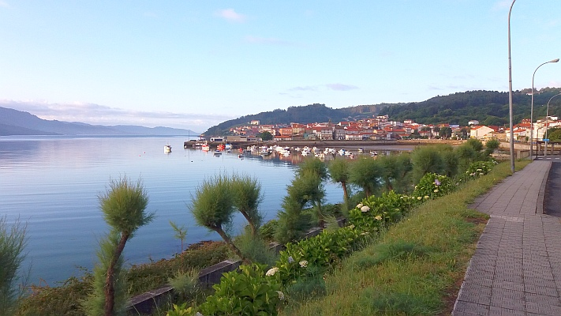

Cizur Menor
A Máltai lovagrend szállásán
Alto Del Perdón
Emlékmű a szélerőművek mellett
El Toro

Spanyolhon egyik jelképe
Cirauqui
Város a hegy tetején

Esti napsütés
Az örám este 21 óra 30-at mutatott
Az óceán partján
A lábam már jelezte, ennyi volt...
Az út vége
Innen már nincs tovább, a világ-vége